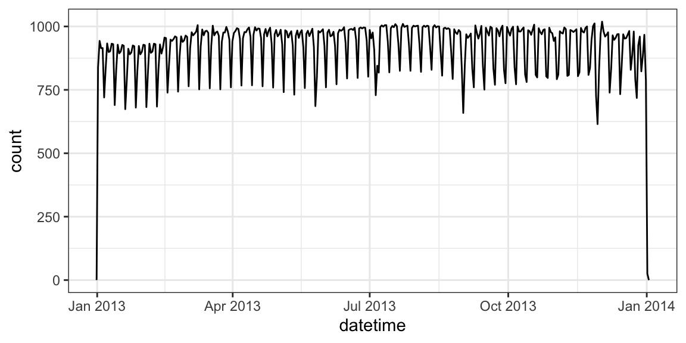
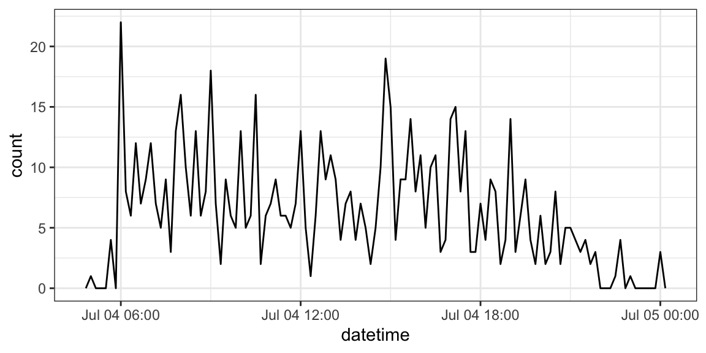
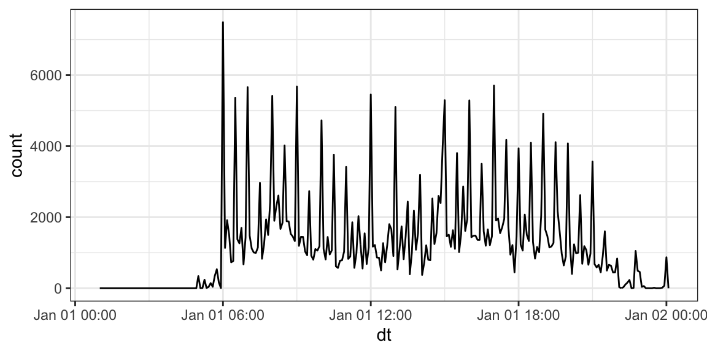

library(tidyverse)Dates
Learning Objectives
- Manipulating dates and times.
- Chapter 18 of RDS.
- Dates and Times Cheat Sheet.
- Lubridate Overview.
Parsing Dates
The
{lubridate}package has a bunch of convenience functions for working with dates. It’s a part of the tidyverse, so is loaded along with it.There are three main classes for date/time data:
Datefor just the date.- In tibbles, this shows up as
<date>.
- In tibbles, this shows up as
POSIXctfor both the date and the time. “POSIXct” stands for “Portable Operating System Interface Calendar Time” (don’t ask me where the “X” comes from). It is a part of a standardized system of representing time across many computing computing platforms.- In tibbles, this shows up as
<dttm>.
- In tibbles, this shows up as
hmsfrom the hms R package for just the time. “hms” stands for “hours, minutes, and seconds.”- In tibbles, this shows up as
<time>.
- In tibbles, this shows up as
today()will give you the current date in theDateclass.today()[1] "2025-06-03"class(today())[1] "Date"now()will give you the current date-time in thePOSIXctclass.now()[1] "2025-06-03 12:30:12 EDT"class(now())[1] "POSIXct" "POSIXt"There is no built-in R function to find the current time without the date. But you can use
hms::as_hms(now())to get the current time.hms::as_hms(now())12:30:12.79113class(hms::as_hms(now()))[1] "hms" "difftime"
Parsing Dates using {readr}
You can use
parse_date(),parse_datetime(), andparse_time()(from{readr}) to parse a date/date-time/time from a string.x <- parse_date("10/11/2020", format = "%m/%d/%Y") x[1] "2020-10-11"class(x)[1] "Date"y <- parse_datetime("10/11/2020 11:59:20", format = "%m/%d/%Y %H:%M:%S") y[1] "2020-10-11 11:59:20 UTC"class(y)[1] "POSIXct" "POSIXt"z <- parse_time("11:59:20", "%H:%M:%S") z11:59:20class(z)[1] "hms" "difftime"Table 18.1 from RDS (2e): All date formats understood by readr:
Type Code Meaning Example Year %Y4 digit year 2021 %y2 digit year 21 Month %mNumber 2 %bAbbreviated name Feb %BFull name February Day %dTwo digits 02 %eOne or two digits 2 Time %H24-hour hour 13 %I12-hour hour 1 %pAM/PM pm %MMinutes 35 %SSeconds 45 %OSSeconds with decimal component 45.35 %ZTime zone name America/Chicago %zOffset from UTC +0800 Other %.Skip one non-digit : %*Skip any number of non-digits Exercise: Parse this
t2 <- "11:15:10.12 PM"
Parsing dates using {lubridate}
{lubridate}comes with a bunch of helper functions to parse dates more automatically. The helper function name itself specifies the order of the year, month, day, hours, minutes, and seconds.To parse dates, look at the help page of
help(ymd)## Only the order of year, month, and day matters ymd(c("2011/01-10", "2011-01/10", "20110110"))[1] "2011-01-10" "2011-01-10" "2011-01-10"mdy(c("01/10/2011", "01 adsl; 10 df 2011", "January 10, 2011"))[1] "2011-01-10" "2011-01-10" "2011-01-10"To parse times, look at the help page of
help(ms)## only the order of hours, minutes, and seconds matter hms(c("10:40:10", "10 40 10"))[1] "10H 40M 10S" "10H 40M 10S"Note that
ms(),hm(), andhms()won’t recognize “-” as a separator because it treats it as negative time. So useparse_time()here.ms("10-10")[1] "10M -10S"To parse date-times, look at the help page of
help(ymd_hms)More generally, you can choose the order of elements with
parse_date_time(), which has a different and easier syntax thanreadr::parse_datetime().parse_date_time("11, 22, 01 here is a trap! 11/02/2002", orders = "HMSmdy")[1] "2002-11-02 11:22:01 UTC"Exercise: Parse the following date-times.
"05/26/2004 UTC 11:11:11.444" "26 2004 05 UTC 11/11/11.444"Exercise (RDS1e16.2.4.3): Use the appropriate lubridate function to parse each of the following dates:
d1 <- "January 1, 2010" d2 <- "2015-Mar-07" d3 <- "06-Jun-2017" d4 <- c("August 19 (2015)", "July 1 (2015)") d5 <- "12/30/14" # Dec 30, 2014
Dates from individual components
If you have a vector of years, months, days, hours, minutes, or seconds, you can use
make_date()ormake_datetime()to create dates and date-times.make_date(year = 1981, month = 6, day = 25)[1] "1981-06-25"make_datetime(year = 1972, month = 2, day = 22, hour = 10, min = 9, sec = 01)[1] "1972-02-22 10:09:01 UTC"nycflights13 example:
library(nycflights13) data("flights") flights |> mutate(datetime = make_datetime(year = year, month = month, day = day, hour = hour, min = minute)) -> flights select(flights, datetime)# A tibble: 336,776 × 1 datetime <dttm> 1 2013-01-01 05:15:00 2 2013-01-01 05:29:00 3 2013-01-01 05:40:00 4 2013-01-01 05:45:00 5 2013-01-01 06:00:00 6 2013-01-01 05:58:00 7 2013-01-01 06:00:00 8 2013-01-01 06:00:00 9 2013-01-01 06:00:00 10 2013-01-01 06:00:00 # ℹ 336,766 more rowsHaving it in the date-time format makes it easier to plot.
ggplot(flights, aes(x = datetime)) + geom_freqpoly(bins = 365)
It makes it easier to filter by date
flights |> filter(as_date(datetime) == ymd(20130704)) |> ggplot(aes(x = datetime)) + geom_freqpoly(binwidth = 600)
I used
as_date()in the previous example. This function will try to coerce an object to a date. Sometimes successfully! It is particularly useful for extracting the date component of aPOSIXctobject.as_datetime()tries to coerce an object to aPOSIXctobject.Exercise: Create a date variable from the following data frame. Then filter out all rows before Feb 1, 2010. If you finish early, try converting the month variable to the numeric representation of the month. (Hint: use
{stringr}to fix themonthvariable then use the built-in vectormonth.abb).fake <- tribble(~year, ~month, ~day, ~month_num, ##----/-------/---------------- 2018, "Oct", 1, 10, 2011, "Nov", 2, 11, 2019, "Dec", 3, 12, 2010, "JAN", 5, 1, 1999, "MAr", 1, 3, 1987, "ApR", 3, 4, 2020, "maY", 2, 5, 2010, "May", 4, 5)
Extracting Components
year()extracts the year.month()extracts the month.week()extracts the week.mday()extracts the day of the month (1, 2, 3, …).wday()extracts the day of the week (Saturday, Sunday, Monday …).yday()extracts the day of the year (1, 2, 3, …)hour()extracts the hour.minute()extract the minute.second()extracts the second.
ddat <- mdy_hms("01/02/1970 03:51:44")
ddat[1] "1970-01-02 03:51:44 UTC"year(ddat)[1] 1970month(ddat, label = TRUE)[1] Jan
12 Levels: Jan < Feb < Mar < Apr < May < Jun < Jul < Aug < Sep < ... < Decweek(ddat)[1] 1mday(ddat)[1] 2wday(ddat, label = TRUE)[1] Fri
Levels: Sun < Mon < Tue < Wed < Thu < Fri < Satyday(ddat)[1] 2hour(ddat)[1] 3minute(ddat)[1] 51second(ddat)[1] 44Exercise: Load the
wmata_ridershipdata frame into R from https://dcgerard.github.io/stat_412_612/data/wmata_ridership.csv. For each month, calculate the proportion of rides made on a given day of the month. Then make box plots of the proportions of ridership vs day of the weak. But exclude any days from 2004.You can overwrite components.
ddat <- mdy_hms("01/02/1970 03:51:44") ddat[1] "1970-01-02 03:51:44 UTC"year(ddat) <- 1988 ddat[1] "1988-01-02 03:51:44 UTC"To create a new date with the updated component, rather than overwrite a component, use
update().ddat[1] "1988-01-02 03:51:44 UTC"update(ddat, year = 1999)[1] "1999-01-02 03:51:44 UTC"ddat ## still 1988[1] "1988-01-02 03:51:44 UTC"The book provides an example of using
update()on larger elements to see fine scale patternsflights |> mutate(dt = update(datetime, yday = 1)) |> ggplot(aes(x = dt)) + geom_freqpoly(binwidth = 300)
You can round components with
round_date(). You round to the nearest “unit” (e.g., year or day).ddat <- mdy_hms("01/02/1970 03:51:44") ddat[1] "1970-01-02 03:51:44 UTC"round_date(ddat, unit = "year")[1] "1970-01-01 UTC"You can round down using
floor_date()and round up withceiling_date()floor_date(ddat, unit = "year")[1] "1970-01-01 UTC"ceiling_date(ddat, unit = "year")[1] "1971-01-01 UTC"
Time Spans
To count the number of seconds between two dates, use a
duration. You can read about durations usinghelp("Duration-class")You first subtract two dates, then use
as.duration()to create a duration.We can find out how old Patrick Stewart is using durations
d1 <- ymd(19400713) d2 <- today() agesec <- as.duration(d2 - d1) agesec[1] "2678918400s (~84.89 years)"You can also create durations from years with
dyears(), from days withddays(), etc…dyears(1)[1] "31557600s (~1 years)"ddays(1)[1] "86400s (~1 days)"dhours(1)[1] "3600s (~1 hours)"dminutes(1)[1] "60s (~1 minutes)"dseconds(1)[1] "1s"You can add durations to date-times, but you always add seconds, so if there is daylight savings you get weird results (add a day but the time is not the same as the time the previous day).
one_pm <- ymd_hms("2016-03-12 13:00:00", tz = "America/New_York") one_pm[1] "2016-03-12 13:00:00 EST"one_pm + ddays(1)[1] "2016-03-13 14:00:00 EDT"Periods are human readable time spans. You create periods with
years(1)[1] "1y 0m 0d 0H 0M 0S"days(1)[1] "1d 0H 0M 0S"hours(1)[1] "1H 0M 0S"minutes(1)[1] "1M 0S"seconds(1)[1] "1S"Adding a
periodtakes into account daylight savings.one_pm[1] "2016-03-12 13:00:00 EST"one_pm + days(1)[1] "2016-03-13 13:00:00 EDT"You can read more about periods with
help("Period-class")Intervals are like durations, but they also have an associated start time and end time. You can read more about intervals with
help("Interval-class")You create an interval with
start_date %--% end_date. E.g.The main use of intervals is when you want to do division.
- Divide an interval by a duration to determine its physical length.
- Divide an interval by a period to determine its implied length in clock time.
E.g., the number of days between between Jan 1 2019 and Jan 1 2020 is
(ymd("2019-01-01") %--% ymd("2020-01-01")) / days(1)[1] 365while the number of days between Jan 1 2020 and Jan 1 2021 is
(ymd("2020-01-01") %--% ymd("2021-01-01")) / days(1)[1] 366because of the leap year.
Exercise: How long of a time-span is covered in the WMATA ridership dataset?
Time Zones
Time zones are specified using the
tzortzonearguments (for example, in the call toymd_hms()above).Time zones are specified by “content/city.” For example,
"America/New_York"and"Europe_Paris"You can see a complete list of time zones with
OlsonNames().The default time zone is
UTC(which has no daylight savings).You usually don’t have to worry about timezones unless you loaded them in incorrectly. For example, R might think it’s
UTCeven though it should beAmerica/New_Yorkand then forget daylight savings.If a date-time is labelled with the incorrect time zone, use
force_tz().d1 <- ymd_hms("20140101 10:01:11") d1[1] "2014-01-01 10:01:11 UTC"force_tz(d1, tzone = "America/New_York")[1] "2014-01-01 10:01:11 EST"If the timezone is correct, but you want to change it, use
with_tz().with_tz(d1, tzone = "America/New_York")[1] "2014-01-01 05:01:11 EST"
Regnal Year Exercise
Consider the regnal.csv, a table of regnal years of English monarchs, taken from Wikipedia: https://en.wikipedia.org/wiki/Regnal_years_of_English_monarchs
“Regnal years” are years that correspond to a monarch, and might differ from the actual reign of that monarch. It’s mostly used for dating legal documents (“nth year of the reign of King X”). It’s a weird English thing. The variables include:
monarch: The name of the monarch.num_years: The number of years of the reign.first: The start year of the reign.start_date: The date when each regnal year begins.end_date: The date when each regnal year ends.final: The final date of the reign.
Clean these data to get the start and end dates of each reign in proper date format. E.g.
# A tibble: 43 × 4
monarch num_years start end
<chr> <chr> <date> <date>
1 William I 21 1066-10-14 1087-09-09
2 William II 13 1087-09-26 1100-08-02
3 Henry I 36 1100-08-05 1135-12-01
4 Stephen 19 1135-12-26 1154-10-25
5 Henry II 35 1154-12-19 1189-07-06
6 Richard I 10 1189-09-03 1199-04-06
7 John 18 1199-05-27 1216-10-19
8 Henry III 57 1216-10-28 1272-11-16
9 Edward I 35 1272-11-20 1307-07-07
10 Edward II 20 1307-07-08 1327-01-20
# ℹ 33 more rowsUse the start and end columns to verify that the num_years column from Wikipedia is accurate.